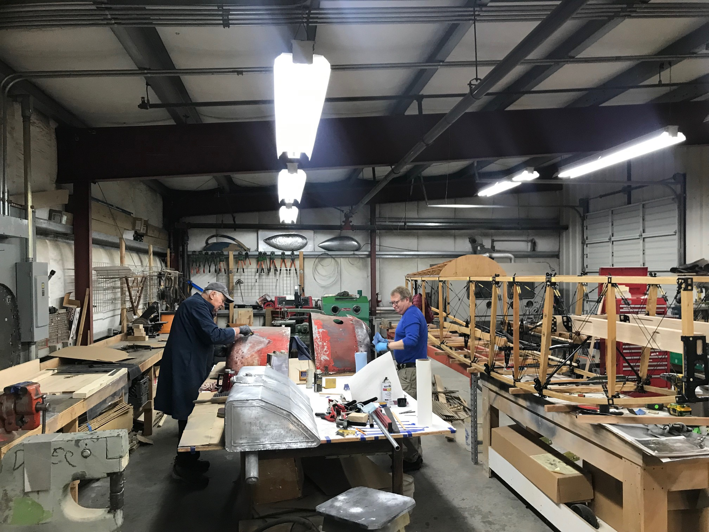

Donations & Sponsorships
Why give?
WAAAM is a 501(c)3 nonprofit organization which means your donation is a tax deductible donation. You can donate funds to help us keep the cars driving and the planes in the air. You can help restore a vehicle, keep the lights and heat in the museum on, or so much more. Whatever your passion, you can help! Learn more about the different types of donations you can make by clicking on the bars below.
Tribute Gifts
Donating to WAAAM in honor or in memory of someone is a great way to recognize the important people in your life. When you make a tribute gift the honoree or family will be notified of your thoughtfulness. Feel free to call in or mail in tribute gifts to WAAAM. Be sure you have the following information available to help ease your gift.
- Your name, address, & phone number
- The name of the person honored or remembered and their address
You may also want to include
- What the special occasion is such as a birthday or anniversary if appropriate.
- A special message to send to the honoree or family of the deceased, if desired.
Online Giving
There are many easy ways you can give to WAAAM just by using the internet! Websites like Goodsearch and many more will donate to the charity of your choice when you use them - all at no extra cost to you.
Planned Giving & Bequests
Charitable bequests are a great way to give after you have gone. With just a few simple sentences your will or trust can pay it forward. You can leave a specific item or amount of money, have the gift contingent on certain events, or leave a percentage of funds to WAAAM. Because you are not actually making a gift until after your lifetime, you can change your mind at any time. Let your loved ones know what you want to do and talk with an attorney to insure full compliance with your desires and tax laws.
Matching Gifts Programs
Many employers match their employees' charitable donations. Check with your business's human resources department. Help your gift to WAAAM pack more punch.
Companies that have already given to WAAAM through matching gift programs include Portland General Electric and the GE Foundation.
WAAAM is also a part of the Oregon Cultural Trust that has an annual match drive that benefits both the Trust and the applicable 501(c)3 of your choice.
Sponsor an Event
Les Schwab Tire Center sponsored a trophy for the WAAAM Traffic Jam. Thanks Schwab! All of our big events are fundraisers for the museum. Any additional aid we get can help make these fundraisers even better than ever! It takes a lot to pull off our big events and we can always use the extra support. Our Annual Hood River Fly-In and the WAAAM Traffic Jam could not be possible without our sponsors.
If you want to sponsor a different kind of event - such as a free admission day - we'd love to have you give us a call!
Sponsor a Restoration
Our restoration shop is always in need of a boost. We have many projects that are waiting for funds to help get them off the ground. Sponsoring something specific is a great way to know exactly where your funding is going and see the benefits of your contribution in action.
Some of the projects that have been accomplished thanks to sponsors and donors are WAAAM's 1910 Parker-Curtiss Pusher, 1910 Aultman-Taylor Steam Tractor, 1938 Rearwin Speedster, and many more!
Companies that have donated to help sponsor a project include Columbia Helicopters, the Ludwick Family Foundation, Consolidated Aircraft Coatings, and Oregon Aero.
Artifact Donations
Be it an airplane, automobile, motorcycle, or a related item of transportation history, WAAAM is a happy home for many historic objects and artifacts. Stop by, give us a call, or email us to see if your item or items will fit in with our collection. Because WAAAM is a 501(c)3 non-profit all donations are tax deductible to the full extent of the law.
Click here to see a list of our airplane and automobile donors - we can't thank them enough!
Our Wishlist
From small to large items and everything in between, there is no shortage of things we need to keep normal business operations running smoothly here at the Western Antique Aeroplane & Automobile Museum. Some examples include:
- post-it notes
- printer ink (Xerox VersaLink C405)
- printer paper
- four iPads (generation 9 preferred with wireless and cellular capabilities - link )
- new roof for our restoration shop and storage hangar
- pathway for gazebo
- audio interactive displays
- toilet paper (AngelSoft Professional works best with our toilet system)
- high GB flash drives
- microSD card (512 GB or more storage space)
- blue shop towels
- sandblasting material (we use "Black Aluminum Oxide 70 grit blast media" the most)
- forever stamps